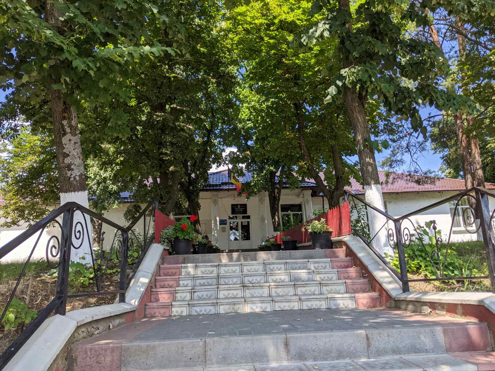
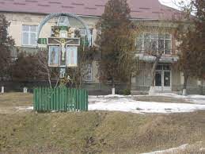
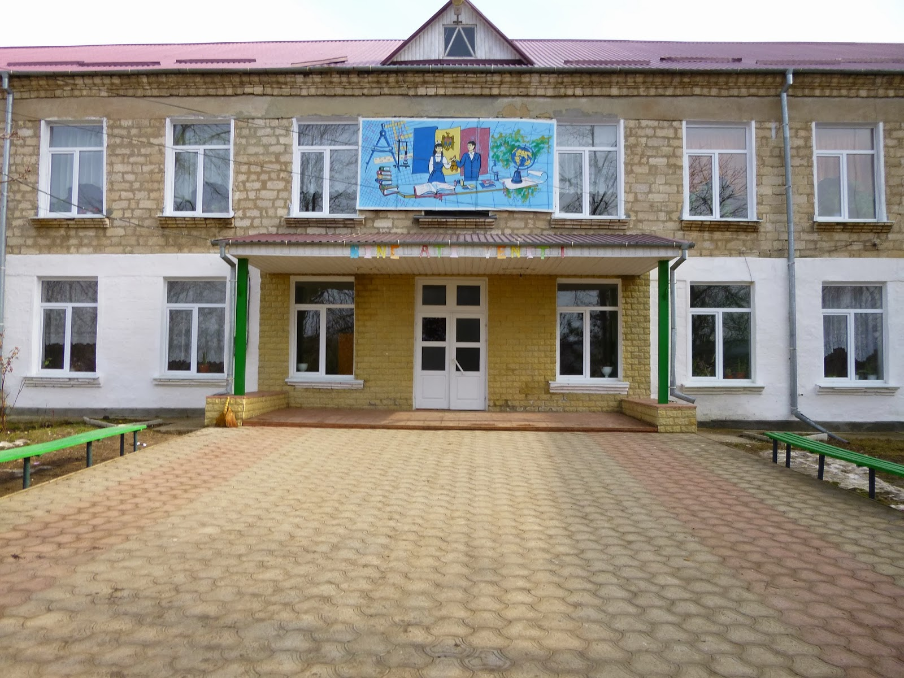
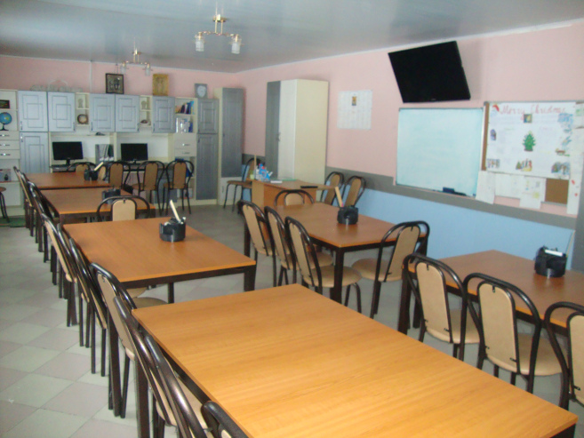

| Centrul |
Denumirea |
Poză |
Descriere |
Telefon |
| Centrul Administrativ |
Primăria satului Ulmu |

|
Primaria Satului Ulmu este in componenta Raionul Ialoveni situata la latitudinea 47.0200
longitudinea 28.5458 si altitudinea de 177 metri fata de nivelul marii. Primarul este
VEACESLAV DRUCEANU din partea (PDM - Partidul Democrat din Moldova). Conform recensamintului
din anul 2014 populatia este de 2 693 locuitori. Distanța directă pîna în or. Ialoveni este
de 27 km. Distanța directă pîna în or. Chişinău este de 35 km. |
- Primar: 0-268-47-2-36
- Viceprimar: 0-268-47-0-79
- Contabilitatea: 0-268-47-3-75
- Secretar: 0-268-47-2-38
|
| Centrul de Sănătate |
Centrul Medicilor de Familie a satului Ulmu |

|
Sănătatea mai presus de toate! 2002-dispensarul medical se transforma în Centrul de Sanatate cu 3
medici de familie Andrei şi Zinaida Mardare, Georgeta Corcodel si 7 asistente medicale
Ecaterina Gutu, Zinaida Nani, Maria Podoleanu, Lidia Ursu, Ecaterina Plamadeala, Vera
Corcodel si Galina Budeanu, un asistent de fizioterapie Vladimir Mariniuc, o laborantă Iulia
Agrici.
În prezent instituţia are statut de Oficiu al medicului de familie, am fost trecuţi intr-o
cladire impozanta cu 2 etaje din centrul localitatii cu cabinete spaţioase şi comode,
inzestrate cu inventarul şi instrumentele medicale necesare. La Ulmu îndeplineşte funcţia de
medic-coordonator Doamna Georgeta Corcodel originară din Lipcani, Absolventa a
Universitaţii de Stat de Medicina şi Farmacie Nicolae Testemitanu, este căsătorită in acest
sat. |
Medic de familie: 0-268-47-2-46 |
| Centrul Educațional |
Gimnaziul „Mihai Eminescu” |

|
Instituția de învățămînt din satul Ulmu datează din anul 1966, clădire – tip pentru 520 de
locuri. În 1977 frecventau Școala medie de cultură generală 809 elevi.
În anul 2008, în urma comasării Școlii medii „M.Eminescu” cu Gimnaziul din localitate se
formează Liceul Teoretic „M.Eminescu”.
Începînd cu 1966 și pînă în prezent școala din s.Ulmu, actualul Gimnaziul „M.Eminescu”, a
educat 46 de promoții. |
- Director: 0-268-47-2-42
- Cabinet Informatică : 0-268-47-7-21
|
| Centrul Instructiv-Educativ |
Centrul de Zi din Ulmu |

|
În anul 2009, pe lângă Biserica cu hramul „Intrarea Maicii Domnului în Biserică”, din satul
Ulmu, r. Ialoveni, s-a deschis Centrul de zi pentru copii. Scopul Centrului de zi Ulmu este
acordarea serviciului pentru protecția copilului a cărui misiune este de a preveni: violența
în familie și în societate, abandonul și instituționalizarea copiilor prin asigurarea pe
timpul zilei a unor activități de îngrijire, educație, recreere, socializare, consiliere,
dezvoltarea deprinderilor de viață. |
Biserica: 0-268-47-8-27 |